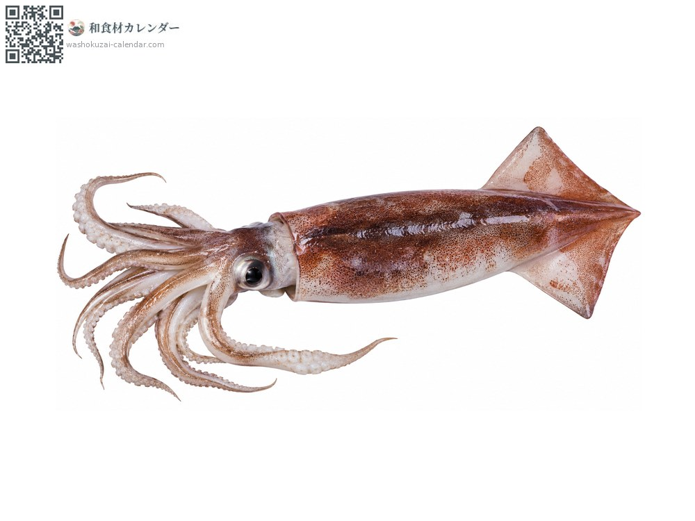
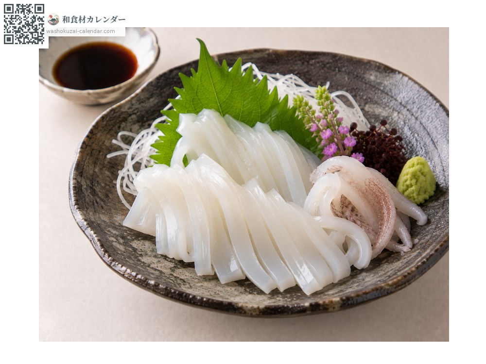
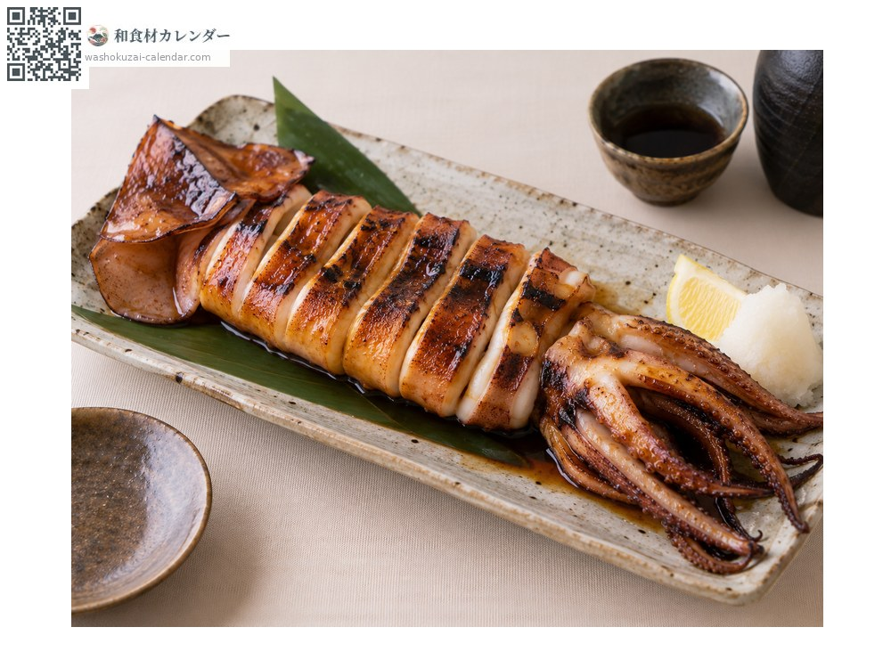
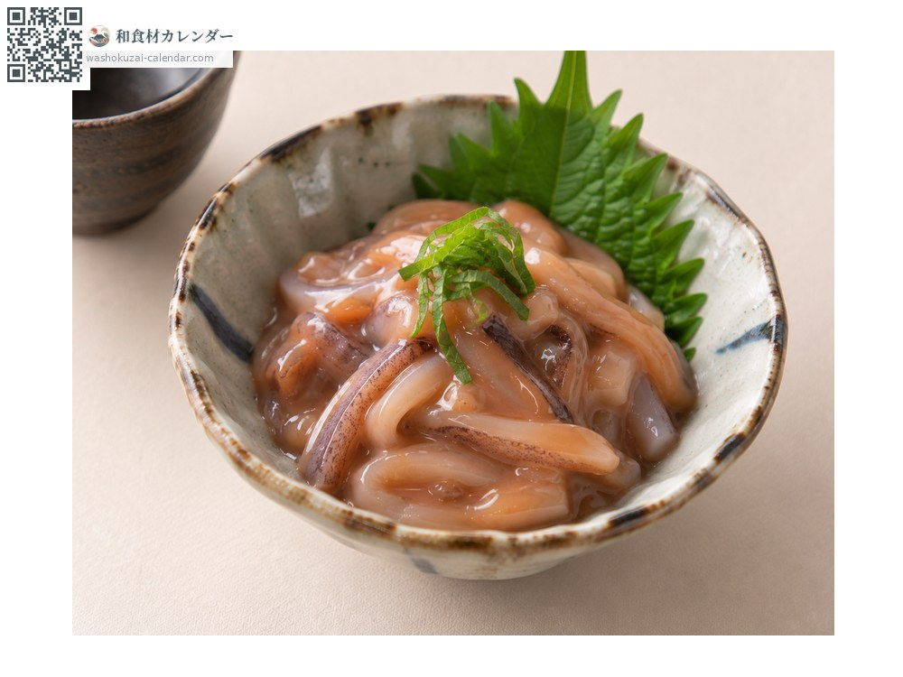
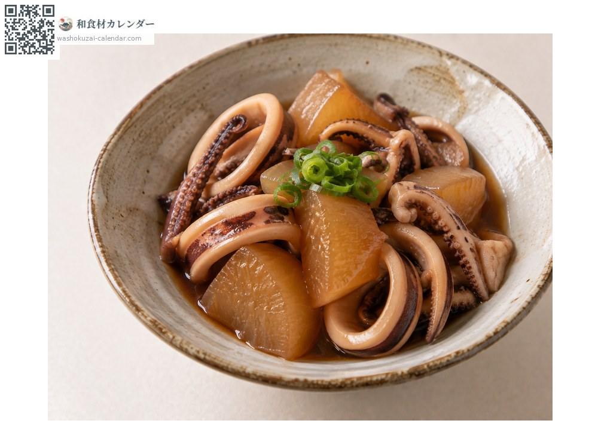

Seafood
Japanese common squid
スルメイカ するめいか surumeika
Also known assurumeika, ika
At its best in Jun, Jul, Aug, Sep

When it is at its best
Jan
Feb
Mar
Apr
May
Jun
Jul
Aug
Sep
Oct
Nov
Dec
In seasonAvailable
How to cook

Sashimi
Cut into fine strips. Also good dressed with the innards.

Grilled whole squid
Grilled whole and brushed with soy sauce.

Shiokara (salt-fermented seafood)
The flesh cured with its own innards.

Nitsuke (simmered in sweet soy)
Simmered with taro or daikon.
How to choose
A translucent, reddish-brown body; it turns cloudy white with time. The eyes should be clear.
Storage
Remove the innards and refrigerate. Sashimi-grade should be eaten the same day. Freezes well.
Main areas
Good to know
The most widely eaten squid in Japan. Poor catches in recent years have pushed prices up.